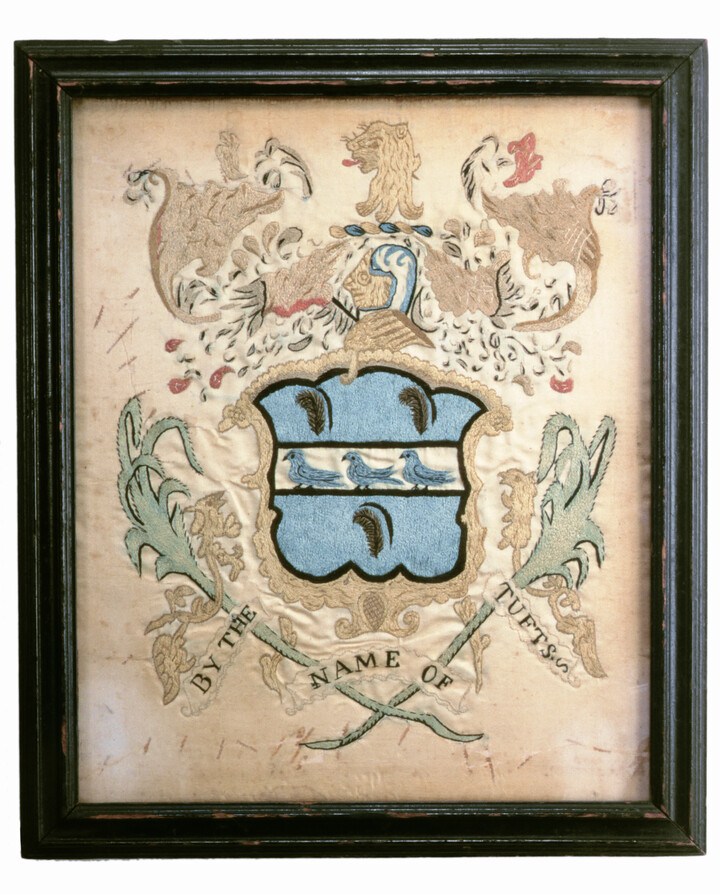
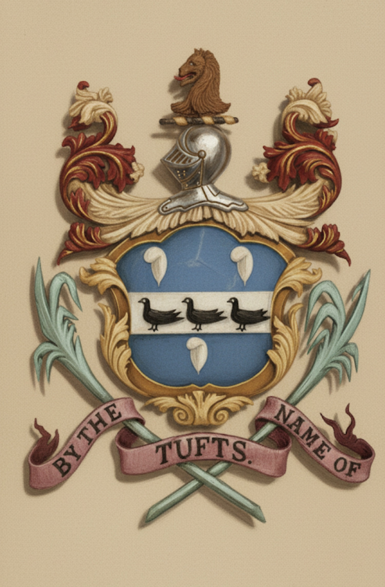
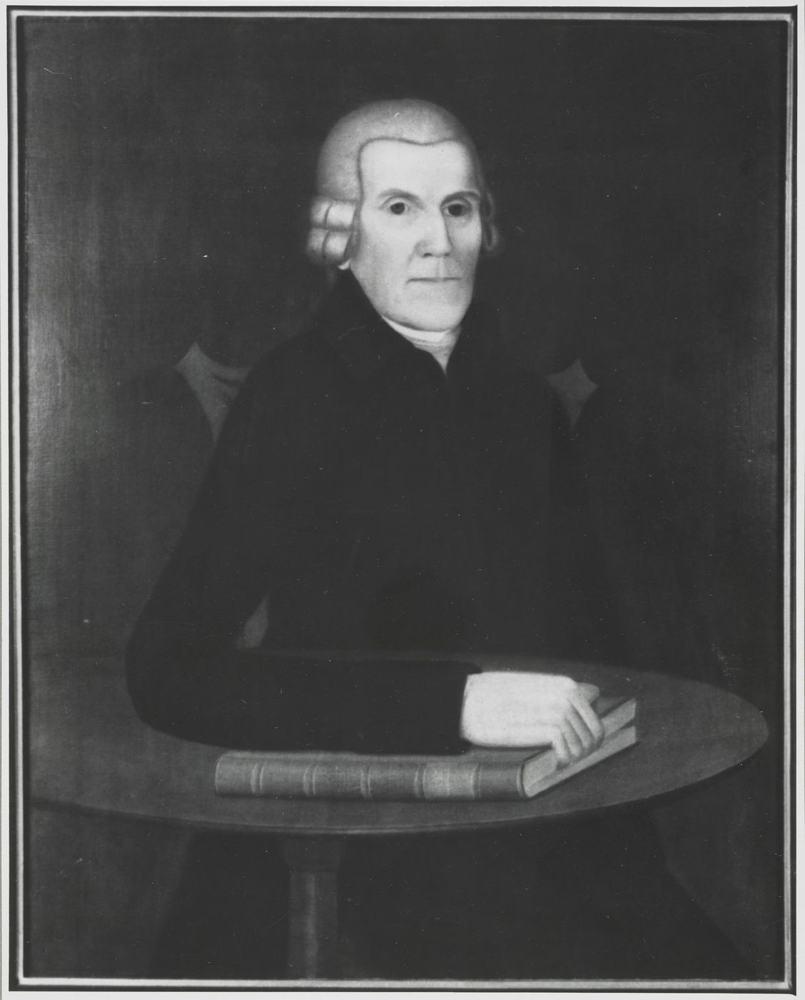
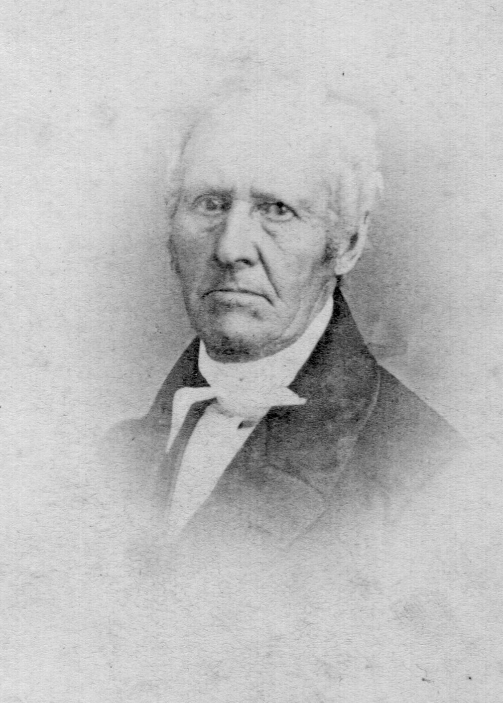
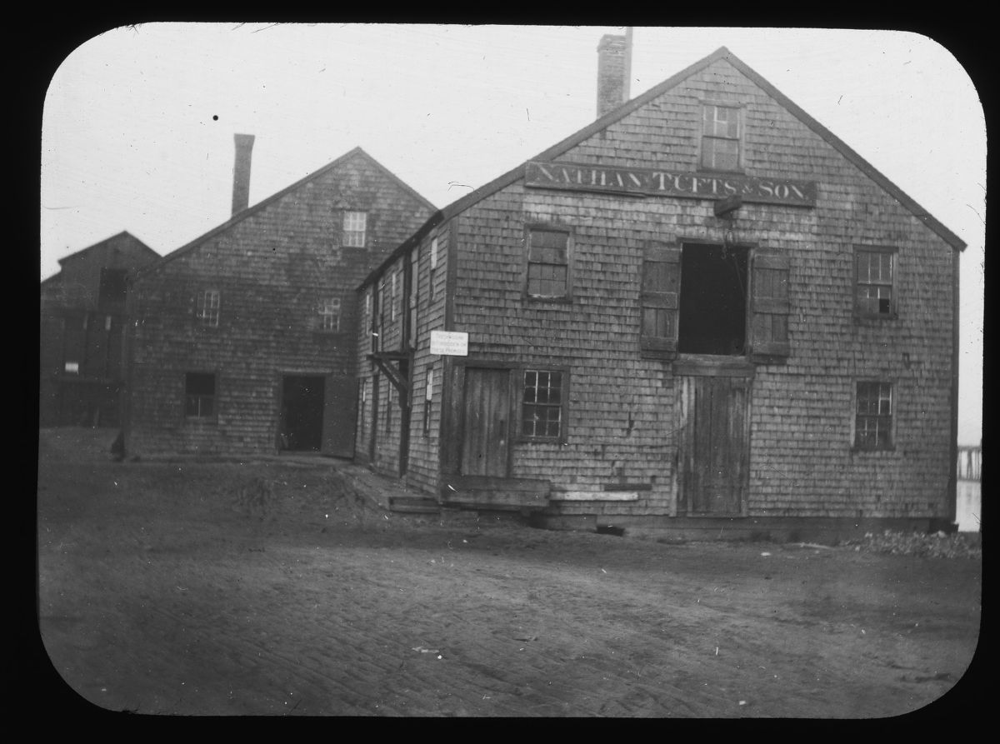
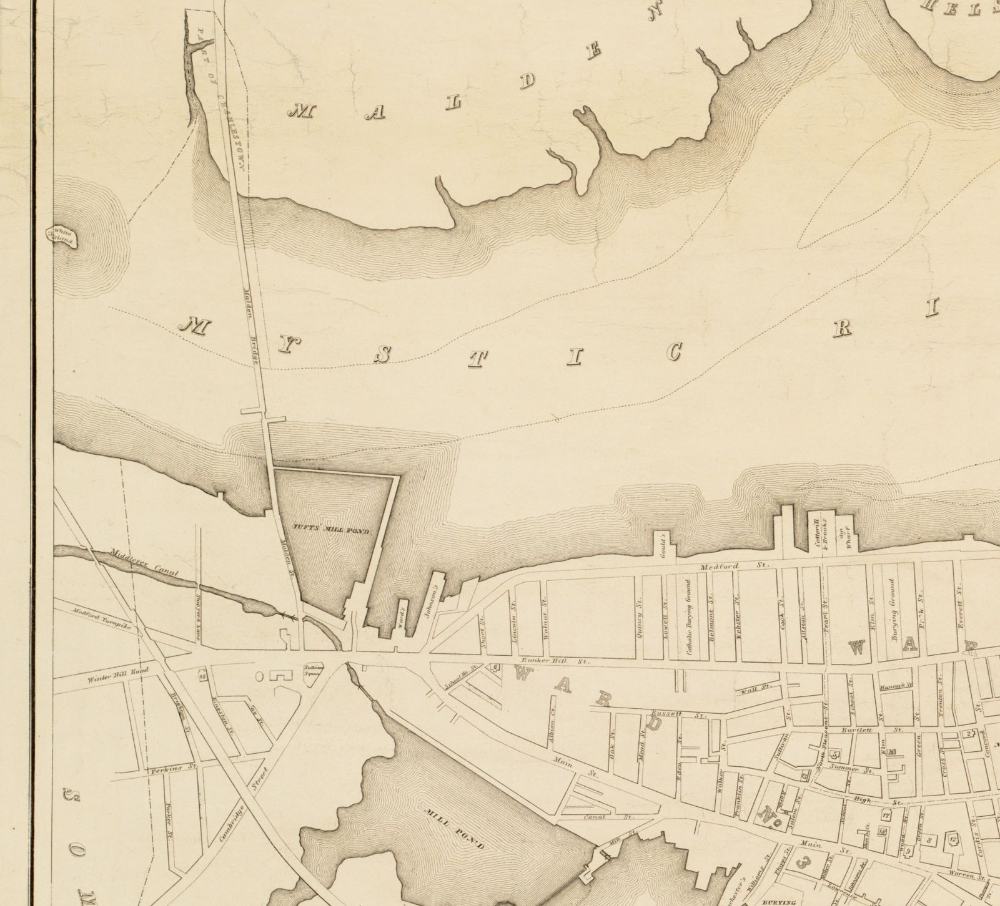
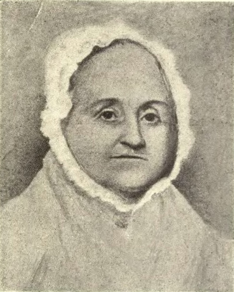
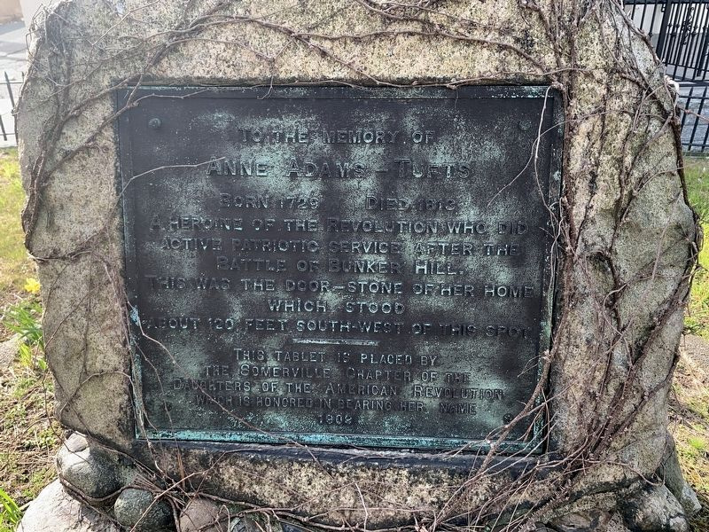

Photographs

All page scans: Sources: Page Scans.
Artifacts

Historic Deerfield holds a needlework coat of arms of the Tufts (spelled Tuffts) family, made in Hartford, Connecticut, about 1800: polychrome silk embroidery on white satin, accession no. HD 1998. The museum’s online page showed no photograph as of November 4, 2026. The piece and its shield are discussed on The Tufts Coat of Arms.
“One heirloom of the family, a tankard (now belonging to the First Congregational Society of Quincy, Mass.), made by John Edwards, was the gift of Elizabeth Quincy to her daughter, Lucy (Quincy) Tufts, who married Dr. Cotton Tufts in 1755.”
Jay Franklin Tufts, Tufts Family History 1633–1963 (secondary source), p. 35 · page scan

⚑ Unverified
The tankard's present location is reported from 1963. No photograph is held.
Family artifacts Note: Pending further work.
Letters
Note: Pending further work.
Portrait of the Rev. Ebenezer Turell
Tufts association: Bequeathed by the Rev. Ebenezer Turell, Medford’s second minister, to the young Turell Tufts (1770–1842), his namesake, who in turn left it to the First Parish church in 1842.
“At the “Item — I give to little Turell Tufts . . . that my shadow may remain” the portrait of Ebenezer Turell thus bequeathed was displayed by Mr. Fiske, who had procured it from the First Parish Church for the occasion. At the “item, I give to Simon Tufts my watch” a silver watch with chain and seal was passed around for inspection.”
Medford Historical Register, vol. XXIV, no. 3 (Sept. 1921), “Season of 1920–1921,” pp. 66–67. Internet Archive, reporting the Medford Historical Society’s February 1921 meeting, at which Mr. Mann read a copy of the minister’s will made at the Probate office
The watch shown at that meeting was not Mr. Turell’s own; the Register says it had belonged to Dr. Daniel Osgood and was “doubtless similar to Mr. Turell’s.” Its present whereabouts, and the portrait’s, have not been checked since 1921.
⚑ Unverified
Which Simon Tufts received the minister’s watch is not stated in the Register; Dr. Simon Tufts (1727–1786), father of Turell Tufts, is the likeliest, but the will itself has not been read here. Note: Pending further work.
The Tufts Coat of Arms

The “By the Name of Tufts” armorial painting, the English Tufnell shield it uses, the Historic Deerfield needlework, and Tufts College heraldry. Read about the coat of arms →
Revolutionary-Era Tufts in Perseus and the Adams Papers
A search of the full texts of Brooks’s History of Medford, the Medford Historical Register (vols. 1–30) and Historic Leaves (vols. 1–8) on the Perseus Digital Library, and of the Massachusetts Historical Society’s Adams Papers digital edition, turned up these Revolutionary-era references. Each is cited separately.
Perseus Digital Library
| Date | Finding | Citation |
|---|---|---|
| early April 1775 | A Peter Tufts deposed that, a fortnight before Lexington, Col. Isaac Royall told him “it would not do for us to resist Great Britain.” Which Peter is not stated. | Brooks, History of Medford, p. 174. Perseus |
| 1775–79 | Royall’s letters to Dr. Simon Tufts (1727–1786) as his agent. See Letters of the Tufts Doctors. | Brooks, History of Medford, p. 173–175. Perseus |
| April 30, 1778 | General Court resolve “On petition of Simon Tufts” directing “Simon Tufts, Esq., of Medford” to deliver Royall’s estate to the Medford committee. | Brooks, History of Medford, p. 179. Perseus |
| April–June 1778 | The same resolve (dated April 23) and Simon Tufts’s later formal appointment as agent after the Medford selectmen certified for him. | Medford Historical Register, vol. VIII, p. 55. Perseus |
| June 17, 1775 | “After the battle of Bunker Hill, Anne Tufts assisted in binding up the wounds of eight wounded soldiers who were brought to her house”; later she visited Burgoyne’s captive army on Winter Hill. | Historic Leaves (Somerville Historical Society), vol. 1, p. 21–22. Perseus |
| April 18, 1775 | Samuel Tufts “is said to have spread the alarm of the British march”; his house later sheltered Gen. Greene. Tradition only. | Historic Leaves (Somerville Historical Society), vol. 6, p. 15. Perseus |
| 1775–77 | Of a Medford company of 1775: “There were nine Tuftses … all kinsmen. Seven of them were voters in 1776-7.” | Medford Historical Register, vol. III, p. 30. Perseus |
| October 7, 1777 | Francis Tufts at Stillwater caught up the fallen colors and bore them over the redoubt; commissioned ensign by Gates. The writer says the earlier White Plains version “cannot be true.” | Medford Historical Register, vol. III, p. 41–42. Perseus |
| 1775–76 | “Aaron Tufts and William Bucknam were also veterans, and had been honorably discharged from the army six months before.” | Medford Historical Register, vol. III, p. 47. Perseus |
| 1776–1793 | Timothy Tufts and Samuel Tufts in turn directed the Milk Row school; Timothy first named on October 10, 1776. | Historic Leaves (Somerville Historical Society), vol. 3, p. 90–93. Perseus |
| 1771–1783 | School committee lists naming Peter Tufts Jr. (1771–72), Timothy Tufts (1776–77, 1783) and Samuel Tufts (1778–79). | Historic Leaves (Somerville Historical Society), vol. 4, p. 21–22. Perseus |
| 1781 | “Peter Tufts, in 1781, for twenty days spent for the town as an assessor, was voted £ 403 2s.”, a mark of wartime inflation. | Historic Leaves (Somerville Historical Society), vol. 3, p. 66. Perseus |
| before 1776 | John Brooks, later governor, trained with Dr. Simon Tufts (1727–1786) and “went thence to the army.” | Brooks, History of Medford, p. 305–307. Perseus |
| 1824 | Turell Tufts, chairman of the selectmen, welcomed Lafayette to Medford. | Brooks, History of Medford, p. 141. Page scan |
| 1770–1842 | Gill’s sketch of Turell Tufts, “unmarried,” selectman, treasurer and representative. | Medford Historical Register, vol. XVIII, p. 54–56. Perseus |
⚑ Unverified
Traditions are reported as the sources give them. Samuel Tufts’s alarm ride and Anne Tufts’s nursing rest on Historic Leaves alone. Which Peter Tufts gave the 1775 deposition is not identified.
Adams Papers
| Date | Correspondents | Topic | Citation |
|---|---|---|---|
| August 5 or 12, 1766 | John Adams, Diary | “drank Tea at Dr. Simons Tufts’s at Medford.” The editors identify him as Simon Tufts (1727–1786). | Diary and Autobiography of John Adams, vol. 1. MHS digital edition · Founders Online |
| August 21, 1776 | John Adams to Abigail Adams | Compares a man’s small head with “our Friend Pemberton or Dr. Simon Tufts.” | Adams Family Correspondence, vol. 2, pp. 103–105. MHS digital edition · Founders Online |
| August 29, 1776 | William Tudor to John Adams | Major John Brooks “studied Physick with Doctor Tufts of Medford.” | Papers of John Adams, vol. 5, pp. 7–9. MHS digital edition · Founders Online |
| March 22, 1786 | Mary Cranch to Abigail Adams | “Doctor Simon Tufts is thought to be in a consumtion.” | Adams Family Correspondence, vol. 7, pp. 102–113. MHS digital edition · Founders Online |
| May 22, 1786 | Abigail Adams to John Quincy Adams | English papers carry claims by “Lord Gorge Gorden, mr Simon Tufts and mr Lewis Gray” that John Adams was paid by the French ambassador. | Adams Family Correspondence, vol. 7. MHS digital edition · Founders Online |
| May 24, 1786 | John Adams to Mercy Otis Warren | Same affair. The editors name the source as “Simon Tufts Jr., a loyalist refugee,” Cotton Tufts’s nephew. | Papers of John Adams, vol. 18, pp. 310–312. MHS digital edition · Founders Online |
| September 28, 1786 | Mary Cranch to Abigail Adams | “Doctor Simon Tufts is just gone in a consumtion.” | Adams Family Correspondence, vol. 7, pp. 348–351. MHS digital edition · Founders Online |
| December 31, 1786 | Mary Cranch to Abigail Adams | “Doctor Simon Tufts dy’d last Sunday.” | Adams Family Correspondence, vol. 7, pp. 420–423. MHS digital edition · Founders Online |
| August 23, 1787 | John Quincy Adams, Diary | A visit the editors identify as to Elizabeth Hall Tufts, widow of Dr. Simon Tufts. | Diary of John Quincy Adams, vol. 2. MHS digital edition · Founders Online |
| 1764–1801 | Dr. Cotton Tufts and the Adamses | 188 letters by or to Cotton Tufts. See Letters of the Tufts Doctors. | Adams Papers digital edition. |
Letters of the Tufts Doctors
Three Tufts physicians are easy to confuse. In this section each letter is assigned to one of them by name and dates:
- Dr. Simon Tufts the elder (1700–1747), Medford’s first physician;
- Dr. Simon Tufts the younger (1727–1786)
 , his eldest son, of Medford;
, his eldest son, of Medford; - Dr. Cotton Tufts (1732–1815), the younger son, of Weymouth.
Dr. Cotton Tufts: letters on smallpox, fevers and other diseases
The Adams Papers digital edition of the Massachusetts Historical Society lists 188 letters by or to Cotton Tufts: 90 written by him and 98 written to him. These 21 touch on disease in the letter text. Topics were read from each letter; a quotation is given where one is short.
| Date | Correspondents | Topic | Citation |
|---|---|---|---|
| April 2, 1764 | Abigail Adams to Dr. Cotton Tufts | Smallpox inoculation (his own, in boston; per the editors) | Adams Family Correspondence, vol. 1, pp. 12–15. MHS digital edition · Founders Online |
| April 9, 1764 | John Adams to Dr. Cotton Tufts | Smallpox inoculation. “Ye must permit the little Villains call’d the small Pox to have their Feast this Spring.” | Adams Family Correspondence, vol. 1, pp. 19–20. MHS digital edition · Founders Online |
| April 19, 1764 | Dr. Cotton Tufts to Abigail Adams | Recovery from smallpox inoculation (per the editors) | Adams Family Correspondence, vol. 1, pp. 38–39. MHS digital edition · Founders Online |
| July 5, 1776 | Dr. Cotton Tufts to John Adams | Smallpox inoculation in boston. “Yesterday People in Boston were openly inoculated for the Small Pox.” | Adams Family Correspondence, vol. 2, pp. 35–36. MHS digital edition · Founders Online |
| July 20, 1776 | John Adams to Dr. Cotton Tufts | Smallpox in the adams family | Adams Family Correspondence, vol. 2, pp. 54–55. MHS digital edition · Founders Online |
| July 25, 1776 | Dr. Cotton Tufts to John Adams | Smallpox in the army. “The Small Pox prevailing in our Armies and Country has much retarded the raising Recruits.” | Adams Family Correspondence, vol. 2, pp. 61–63. MHS digital edition · Founders Online |
| August 6, 1776 | Dr. Cotton Tufts to John Adams | Smallpox inoculation; dr. rush’s letter. Thanks Adams for “Dr. Rushs Letter on Inoculation.” | Adams Family Correspondence, vol. 2, pp. 81–83. MHS digital edition · Founders Online |
| September 26, 1782 | Dr. Cotton Tufts to John Adams | Nervous fever | Adams Family Correspondence, vol. 4, pp. 385–388. MHS digital edition · Founders Online |
| October 14, 1785 | Dr. Cotton Tufts to Abigail Adams | Dysentery | Adams Family Correspondence, vol. 6, pp. 424–427. MHS digital edition · Founders Online |
| July 1, 1787 | Abigail Adams to Dr. Cotton Tufts | Fever | Adams Family Correspondence, vol. 8, pp. 104–106. MHS digital edition · Founders Online |
| November 6, 1787 | Abigail Adams to Dr. Cotton Tufts | Smallpox. “my little Boy has got well through the small pox.” | Adams Family Correspondence, vol. 8, pp. 201–203. MHS digital edition · Founders Online |
| January 1, 1788 | Abigail Adams to Dr. Cotton Tufts | Bilious fever | Adams Family Correspondence, vol. 8, pp. 216–217. MHS digital edition · Founders Online |
| March 7, 1790 | Abigail Adams to Dr. Cotton Tufts | Measles. Thomas Adams carried to Braintree “with the Symptoms of the Measles upon him.” | Adams Family Correspondence, vol. 9, pp. 22–24. MHS digital edition · Founders Online |
| May 30, 1790 | Abigail Adams to Dr. Cotton Tufts | Pleurisy fever | Adams Family Correspondence, vol. 9, pp. 63–65. MHS digital edition · Founders Online |
| October 17, 1797 | Abigail Adams to Dr. Cotton Tufts | Yellow fever, philadelphia | Adams Family Correspondence, vol. 12, pp. 263–267. MHS digital edition · Founders Online |
| November 18, 1797 | John Adams to Dr. Cotton Tufts | Yellow fever | Adams Family Correspondence, vol. 12, pp. 297–298. MHS digital edition · Founders Online |
| December 6, 1797 | Abigail Adams to Dr. Cotton Tufts | Yellow fever | Adams Family Correspondence, vol. 12, pp. 321–322. MHS digital edition · Founders Online |
| April 17, 1798 | Dr. Cotton Tufts to Abigail Adams | Dysentery and fever | Adams Family Correspondence, vol. 12, pp. 511–513. MHS digital edition · Founders Online |
| May 25, 1798 | Abigail Adams to Dr. Cotton Tufts | Fever season | Adams Family Correspondence, vol. 13, pp. 49–52. MHS digital edition · Founders Online |
| December 10, 1799 | Dr. Cotton Tufts to John Adams | Bilious fevers. “some few Instances of bilious Fevers with us, at present scarce any Complaint of Disease.” | Adams Family Correspondence, vol. 14, pp. 71–73. MHS digital edition · Founders Online |
| March 26, 1800 | Dr. Cotton Tufts to Abigail Adams | Slow fever | Adams Family Correspondence, vol. 14, pp. 179–181. MHS digital edition · Founders Online |
⚑ Unverified
None of the 188 Adams letters is on throat distemper (diphtheria). Cotton Tufts’s own medical papers at the Countway Library include “a treatise on distemper,” and the Countway’s exhibit says he “introduced a popular treatment for diphtheria early in his career” (see the manuscript collections below). Those papers have not been read item by item.
All 188 Adams Papers letters by or to Dr. Cotton Tufts
| Date | Correspondents | Topic | Citation |
|---|---|---|---|
| April 2, 1764 | Abigail Adams to Dr. Cotton Tufts | ...I should not have been unmindful of you, even tho you had not call'd upon... | Adams Family Correspondence, vol. 1, pp. 12–15. MHS digital edition · Founders Online |
| April 9, 1764 | John Adams to Dr. Cotton Tufts | ...I have nothing to do at present but to play with my Pen. I have long... | Adams Family Correspondence, vol. 1, pp. 19–20. MHS digital edition · Founders Online |
| April 9, 1764 | Abigail Adams to Dr. Cotton Tufts | ...I suppose you have written to me, tho I have not received it, for Mr.... | Adams Family Correspondence, vol. 1, pp. 20–22. MHS digital edition · Founders Online |
| April 19, 1764 | Dr. Cotton Tufts to Abigail Adams | ...It was not forgetfulness, that prevented my writing.... | Adams Family Correspondence, vol. 1, pp. 38–39. MHS digital edition · Founders Online |
| July 3, 1775 | Dr. Cotton Tufts to John Adams | ...You have no Doubt long before this heard of the unhappy Fate of... | Adams Family Correspondence, vol. 1, pp. 235–238. MHS digital edition · Founders Online |
| July 25, 1775 | Dr. Cotton Tufts to John Adams | ...Since my last to you, nothing very important has occurd. The Skirmish near... | Adams Family Correspondence, vol. 1, pp. 264–266. MHS digital edition · Founders Online |
| March 29, 1776 | John Adams to Dr. Cotton Tufts | ...We are impatiently waiting for Intelligence of further Particulars from... | Adams Family Correspondence, vol. 1, pp. 366–368. MHS digital edition · Founders Online |
| April 26, 1776 | Dr. Cotton Tufts to John Adams | ...Soon after the Removal of our Enemies from Boston, I sat myself down to... | Adams Family Correspondence, vol. 1, pp. 393–396. MHS digital edition · Founders Online |
| June 17, 1776 | Dr. Cotton Tufts to John Adams | ...Our vast Extent of Territory requires a great Land Forrce to defend it.... | Adams Family Correspondence, vol. 2, pp. 16–19. MHS digital edition · Founders Online |
| June 23, 1776 | John Adams to Dr. Cotton Tufts | ...It is with Shame, and Confusion of Face, that I acknowledge that your... | Adams Family Correspondence, vol. 2, pp. 21–23. MHS digital edition · Founders Online |
| June 30, 1776 | John Adams to Dr. Cotton Tufts | ...Your Favour of the 17th. I received by Yesterdays Post. Am much obliged,... | Adams Family Correspondence, vol. 2, pp. 24–26. MHS digital edition · Founders Online |
| July 5, 1776 | Dr. Cotton Tufts to John Adams | ...I wrote to You about the 17 or 18th. of last Month which suppose You have... | Adams Family Correspondence, vol. 2, pp. 35–36. MHS digital edition · Founders Online |
| July 20, 1776 | John Adams to Dr. Cotton Tufts | ...Yours of July 5th. never reached me, till this Morning. I greatly regret... | Adams Family Correspondence, vol. 2, pp. 54–55. MHS digital edition · Founders Online |
| July 25, 1776 | Dr. Cotton Tufts to John Adams | ...Yours of the 30th. of June came safe to Hand. A particular Answer to Your... | Adams Family Correspondence, vol. 2, pp. 61–63. MHS digital edition · Founders Online |
| August 6, 1776 | Dr. Cotton Tufts to John Adams | ...Last Week I received Yours of July the 20th. also Dr. Rushs Letter on... | Adams Family Correspondence, vol. 2, pp. 81–83. MHS digital edition · Founders Online |
| April 14, 1777 | Dr. Cotton Tufts to John Adams | ...We hear of your being at Philadelphia and wish You a comfortable Session... | Adams Family Correspondence, vol. 2, pp. 210–211. MHS digital edition · Founders Online |
| April 24, 1777 | Dr. Cotton Tufts to John Adams | ...I wrote to you last Week by Mr. Thos. Russell who was to set out for... | Adams Family Correspondence, vol. 2, pp. 220–222. MHS digital edition · Founders Online |
| September 18, 1777 | Dr. Cotton Tufts to John Adams | ...Our Spring was cold and Wet, Our Summer fruitful and the Fall forbodes a... | Adams Family Correspondence, vol. 2, pp. 344–346. MHS digital edition · Founders Online |
| November 21, 1777 | Dr. Cotton Tufts to John Adams | ...Sometime in September last I wrote to You, and am not a little anxious to... | Adams Family Correspondence, vol. 2, pp. 368–369. MHS digital edition · Founders Online |
| August 5, 1778 | Dr. Cotton Tufts to John Adams | ...The News of your Arrival at Paris gave us great Joy. Before your Letters... | Adams Family Correspondence, vol. 3, pp. 68–70. MHS digital edition · Founders Online |
| November 2, 1778 | Dr. Cotton Tufts to John Adams | ...I wrote to You the latter End of last July which I hope You have received... | Adams Family Correspondence, vol. 3, pp. 112–114. MHS digital edition · Founders Online |
| December 3, 1778 | John Adams to Dr. Cotton Tufts | ...I have the Pleasure of yours of the 5th. of August, for which I am much... | Adams Family Correspondence, vol. 3, pp. 130–131. MHS digital edition · Founders Online |
| February 12, 1779 | Dr. Cotton Tufts to John Adams | ...In the latter End of July and beginning of Novr. last I wrote to You. Am... | Adams Family Correspondence, vol. 3, pp. 163–167. MHS digital edition · Founders Online |
| November 17, 1779 | Dr. Cotton Tufts to John Adams | ...The Autumn of 1779 was the most pleasant and agreable for its Fertility... | Adams Family Correspondence, vol. 3, pp. 383–386. MHS digital edition · Founders Online |
| May 19, 1780 | Dr. Cotton Tufts to John Adams | ...May 19. It thunderd early this Morning and raind about 7 or 8. About 9 a... | Adams Family Correspondence, vol. 3, pp. 386–388. MHS digital edition · Founders Online |
| July 25, 1780 | Dr. Cotton Tufts to John Adams | ...My Letter of the 1st. of May last gave You some Account of the Proceedings... | Adams Family Correspondence, vol. 3. MHS digital edition · Founders Online |
| November 27, 1780 | Dr. Cotton Tufts to John Adams | ...I wrote to You last March also in June, the former by Capt. McNeil who had... | Adams Family Correspondence, vol. 4, pp. 23–25. MHS digital edition · Founders Online |
| December 9, 1780 | John Adams to Dr. Cotton Tufts | ...Your Favour of July 25th was received in Paris in my Absence, and I have... | Adams Family Correspondence, vol. 4, pp. 29–31. MHS digital edition · Founders Online |
| June 20, 1781 | Dr. Cotton Tufts to John Adams | ...I am told that a Vessell will this Day sail for Holland. I know not how to... | Adams Family Correspondence, vol. 4, pp. 155–157. MHS digital edition · Founders Online |
| October 29, 1781 | Dr. Cotton Tufts to John Adams | ...In my last I informed You of the Enemy's taking a Post in Virginia. At... | Adams Family Correspondence, vol. 4, pp. 238–239. MHS digital edition · Founders Online |
| August 1, 1782 | John Adams to Dr. Cotton Tufts | ...I have only time to inclose a few Papers and to pray for your Health and... | Adams Family Correspondence, vol. 4, pp. 369–370. MHS digital edition · Founders Online |
| September 26, 1782 | Dr. Cotton Tufts to John Adams | ...Yours of July 2d. I received being the first, since you left... | Adams Family Correspondence, vol. 4, pp. 385–388. MHS digital edition · Founders Online |
| October 10, 1782 | Dr. Cotton Tufts to John Adams | ...I this day received your Favour of the 17th. Augst. Ultimo. I find that... | Adams Family Correspondence, vol. 5, pp. 11–14. MHS digital edition · Founders Online |
| June 26, 1783 | Dr. Cotton Tufts to John Adams | ...If ever Wisdom Fortitude Patience & Perseverance were necessary, they were... | Papers of John Adams, vol. 15, pp. 57–60. MHS digital edition · Founders Online |
| July 5, 1783 | Dr. Cotton Tufts to John Adams | ...Yesterday Our Independance was celebrated in a decent yet joyful Manner—a... | Papers of John Adams, vol. 15, pp. 84–85. MHS digital edition · Founders Online |
| September 10, 1783 | John Adams to Dr. Cotton Tufts | ...I thank you for your Favours of June 26 and July 5 and for your obliging... | Adams Family Correspondence, vol. 5, pp. 240–242. MHS digital edition · Founders Online |
| November 5, 1783 | Dr. Cotton Tufts to John Adams | ...The Pleliminary Articles of Peace, Cessation of Hostilities &C were not... | Papers of John Adams, vol. 15, pp. 345–349. MHS digital edition · Founders Online |
| June 18, 1784 | Abigail Adams to Dr. Cotton Tufts | ...As You have been so kind as to undertake the care of Mr. Adams'es Estate... | Adams Family Correspondence, vol. 5, pp. 345–346. MHS digital edition · Founders Online |
| July 3, 1784 | Dr. Cotton Tufts to John Adams | ...Since Mrs. Adams's Departure I have revolved within myself, whether you... | Adams Family Correspondence, vol. 5, pp. 355–357. MHS digital edition · Founders Online |
| September 5, 1784 | John Adams to Dr. Cotton Tufts | ...I am here, happily Settled with my Family and I feel more at home, than I... | Adams Family Correspondence, vol. 5, pp. 454–455. MHS digital edition · Founders Online |
| September 6, 1784 | John Adams to Dr. Cotton Tufts | ...Know all Men by these Presents, that I John Adams of Braintree in the... | Adams Family Correspondence, vol. 5, pp. 455–456. MHS digital edition · Founders Online |
| September 8, 1784 | Abigail Adams to Dr. Cotton Tufts | ...To a Gentleman I so much respect, and esteem, I am ashamed to write only a... | Adams Family Correspondence, vol. 5, pp. 456–459. MHS digital edition · Founders Online |
| October 29, 1784 | Dr. Cotton Tufts to Abigail Adams | ...It gives me great Pleasure to hear of your safe Arrivall in Europe, and... | Adams Family Correspondence, vol. 5, pp. 476–477. MHS digital edition · Founders Online |
| November 26, 1784 | Dr. Cotton Tufts to John Adams | ...Yours of Sept. 5. I received the 13th. Instant and rejoice to hear that... | Adams Family Correspondence, vol. 5, pp. 482–485. MHS digital edition · Founders Online |
| December 1, 1784 | Dr. Cotton Tufts to Abigail Adams | ...Your letter from Autueil near Paris of Sept. 8 gave me great Pleasure as... | Adams Family Correspondence, vol. 6, pp. 1–3. MHS digital edition · Founders Online |
| December 15, 1784 | John Adams to Dr. Cotton Tufts | ...What would be the Consequence if We should have an immediate War with... | Papers of John Adams, vol. 16, pp. 469–471. MHS digital edition · Founders Online |
| January 3, 1785 | Abigail Adams to Dr. Cotton Tufts | ...In a Letter which Mr. Tyler wrote me not long since he informd me that Mr.... | Adams Family Correspondence, vol. 6, pp. 41–44. MHS digital edition · Founders Online |
| March 5, 1785 | John Adams to Dr. Cotton Tufts | ...Last night I received yours of 1 Jan. and immediately accepted the Bill... | Adams Family Correspondence, vol. 6, pp. 71–72. MHS digital edition · Founders Online |
| March 8, 1785 | Abigail Adams to Dr. Cotton Tufts | ...Mr. Adams received last Evening a Letter from you dated January 1st, in... | Adams Family Correspondence, vol. 6, pp. 76–78. MHS digital edition · Founders Online |
| March 11, 1785 | Dr. Cotton Tufts to John Adams | ...The Dispute between New York & this State has been referred to Congress, a... | Papers of John Adams, vol. 16, pp. 557–559. MHS digital edition · Founders Online |
| April 11, 1785 | Dr. Cotton Tufts to Abigail Adams | ...I have not received any Letter either from Mr. Adams or from you since... | Adams Family Correspondence, vol. 6, pp. 81–82. MHS digital edition · Founders Online |
| April 19, 1785 | Dr. Cotton Tufts to Abigail Adams | ...It is now a violent Snow Storm (PM) and I hope it will be the last for... | Adams Family Correspondence, vol. 6, pp. 85–88. MHS digital edition · Founders Online |
| April 24, 1785 | John Adams to Dr. Cotton Tufts | ...It was yesterday only that I received your Favour of Nov. 26, which... | Adams Family Correspondence, vol. 6, pp. 88–90. MHS digital edition · Founders Online |
| April 26, 1785 | Abigail Adams to Dr. Cotton Tufts | ...It was not untill the 21 of April that your Letter of December 1st.... | Adams Family Correspondence, vol. 6, pp. 103–109. MHS digital edition · Founders Online |
| August 10, 1785 | Dr. Cotton Tufts to John Adams | ...The Want of a sufficient Power in Congress to regulate the national... | Adams Family Correspondence, vol. 6, pp. 256–257. MHS digital edition · Founders Online |
| August 10, 1785 | John Adams to Dr. Cotton Tufts | ...To 1/2 m. Nails 4/ Aug. 11. To Cash pd. Jno. Gill 24/ 1/2 qe Paper 9d 1. 8. 9 Sept. 29. To Thos. Rus... | Adams Family Correspondence, vol. 6, pp. 257–260. MHS digital edition · Founders Online |
| August 18, 1785 | Abigail Adams to Dr. Cotton Tufts | ...Captain Lyde is to Sail this week. I will not let him go without a few... | Adams Family Correspondence, vol. 6, pp. 282–287. MHS digital edition · Founders Online |
| September 9, 1785 | John Adams to Dr. Cotton Tufts | ...It gives me great Pleasure to see that good Men are so much in Fashion in... | Papers of John Adams, vol. 17, pp. 418–419. MHS digital edition · Founders Online |
| September 16, 1785 | Abigail Adams to Dr. Cotton Tufts | ...I believe that Mr. Storer is going to leave Us in good earnest. He has so... | Adams Family Correspondence, vol. 6, pp. 363–365. MHS digital edition · Founders Online |
| October 5, 1785 | Abigail Adams to Dr. Cotton Tufts | ...Captain Callihan sails sooner than we expected so that we have not time to... | Adams Family Correspondence, vol. 6, pp. 407–408. MHS digital edition · Founders Online |
| October 6, 1785 | Dr. Cotton Tufts to John Adams | ...On the 6th. Ultimo I drew on You for £100 sterling in Favour of Mr. Samuel... | Adams Family Correspondence, vol. 6, pp. 411–413. MHS digital edition · Founders Online |
| October 12, 1785 | Dr. Cotton Tufts to Abigail Adams | ...The anxious Sentiments of a Parent which You have manifested in the close... | Adams Family Correspondence, vol. 6, pp. 423–424. MHS digital edition · Founders Online |
| October 14, 1785 | Dr. Cotton Tufts to Abigail Adams | ...Your agreable Letter of May. 10. from Auteuil I received by your Son. His... | Adams Family Correspondence, vol. 6, pp. 424–427. MHS digital edition · Founders Online |
| November 16, 1785 | Dr. Cotton Tufts to Abigail Adams | ...When I wrote to You by Capt. Cushing informed You of my Fears with respect... | Adams Family Correspondence, vol. 6, pp. 457–458. MHS digital edition · Founders Online |
| November 24, 1785 | Dr. Cotton Tufts to John Adams | ...I have repeatedly forgot to mention to You That in Sepr. 1783. Dr. Holyoke... | Papers of John Adams, vol. 17, pp. 604–605. MHS digital edition · Founders Online |
| December 21, 1785 | Dr. Cotton Tufts to John Adams | ...Your Favour of Sept. 9t I recd. and Your Present of Neckar for which I... | Papers of John Adams, vol. 18, pp. 56–59. MHS digital edition · Founders Online |
| January 5, 1786 | Dr. Cotton Tufts to Abigail Adams | ...I have to thank you for your Communications of Sept and Octob. which came... | Adams Family Correspondence, vol. 7, pp. 5–6. MHS digital edition · Founders Online |
| January 10, 1786 | Abigail Adams to Dr. Cotton Tufts | ...A Boston paper which reachd us by way of Newyork informd me of the Death... | Adams Family Correspondence, vol. 7, pp. 6–9. MHS digital edition · Founders Online |
| January 12, 1786 | Dr. Cotton Tufts to Abigail Adams | ...I wrote to you last Week by Capt Lyde, expecting that He would have sailed... | Adams Family Correspondence, vol. 7, pp. 9–11. MHS digital edition · Founders Online |
| February 21, 1786 | Abigail Adams to Dr. Cotton Tufts | ...Captain Lyde arrived a week ago, and yesterday, he and mr Jenks dinned... | Adams Family Correspondence, vol. 7, pp. 70–76. MHS digital edition · Founders Online |
| March 11, 1786 | John Adams to Dr. Cotton Tufts | ...Your kind Favours of Nov 12. and 24. and Decr 21 are before me. I... | Adams Family Correspondence, vol. 7, pp. 87–88. MHS digital edition · Founders Online |
| April 3, 1786 | John Adams to Dr. Cotton Tufts | ...Inclosed with this is a Letter to Dr Holyoke and all the original Papers... | Adams Family Correspondence, vol. 7. MHS digital edition · Founders Online |
| April 8, 1786 | Abigail Adams to Dr. Cotton Tufts | ...Captain Lyde talks of leaving London tomorrow. I just write a line by him... | Adams Family Correspondence, vol. 7, pp. 137–138. MHS digital edition · Founders Online |
| April 13, 1786 | Dr. Cotton Tufts to Abigail Adams | ...In some of my former Letters I mentioned the Probability, that Belchers... | Adams Family Correspondence, vol. 7, pp. 142–144. MHS digital edition · Founders Online |
| May 26, 1786 | John Adams to Dr. Cotton Tufts | ...There is a Subject So closely connected, with the Business of my Mission... | Adams Family Correspondence, vol. 7, pp. 206–207. MHS digital edition · Founders Online |
| June 2, 1786 | John Adams to Dr. Cotton Tufts | ...I am proud to learn by your Letter of 13. April that I am so rich at the... | Adams Family Correspondence, vol. 7, pp. 210–211. MHS digital edition · Founders Online |
| July 4, 1786 | John Adams to Dr. Cotton Tufts | ...I have accepted your Bill in favour of Storer, of 50£. and paid that in... | Adams Family Correspondence, vol. 7, pp. 241–242. MHS digital edition · Founders Online |
| July 6, 1786 | Dr. Cotton Tufts to Abigail Adams | ...I recd. yours of Jan. 10. Feby 21 and April the 8th And am obliged to you... | Adams Family Correspondence, vol. 7, pp. 244–246. MHS digital edition · Founders Online |
| July 18, 1786 | Dr. Cotton Tufts to John Adams | ...Mrs. Cranch last Evening informed me, That a Mr. Standfast Smith of this... | Adams Family Correspondence, vol. 7, pp. 262–263. MHS digital edition · Founders Online |
| July 22, 1786 | Abigail Adams to Dr. Cotton Tufts | ...I inclose to you the papers which contain the correspondence between Lord... | Adams Family Correspondence, vol. 7, pp. 279–281. MHS digital edition · Founders Online |
| August 1, 1786 | Abigail Adams to Dr. Cotton Tufts | ...Mr Adams receivd yesterday your obliging favour of june 28th by way of... | Adams Family Correspondence, vol. 7, pp. 306–307. MHS digital edition · Founders Online |
| August 15, 1786 | Dr. Cotton Tufts to Abigail Adams | ...In my Acctt. sent Mr. Adams you will not find any large sums Credited for... | Adams Family Correspondence, vol. 7, pp. 322–323. MHS digital edition · Founders Online |
| October 10, 1786 | Abigail Adams to Dr. Cotton Tufts | ...Your Letters of july 6th and August 15th were duly received. The accounts... | Adams Family Correspondence, vol. 7, pp. 359–366. MHS digital edition · Founders Online |
| October 14, 1786 | Dr. Cotton Tufts to Abigail Adams | ...Your Favour of July 22d and Aug: 1st. and also Mr. Adams of July 4th. I... | Adams Family Correspondence, vol. 7, pp. 370–372. MHS digital edition · Founders Online |
| January 2, 1787 | Dr. Cotton Tufts to Abigail Adams | ...By Capt. Folger who arrived here last Saturday, I recd. Your obliging... | Adams Family Correspondence, vol. 7, pp. 423–426. MHS digital edition · Founders Online |
| January 16, 1787 | Abigail Adams (daughter of JA and AA) to Dr. Cotton Tufts | ...By a Letter to my Mother from you, I Learnt that you had in your... | Adams Family Correspondence, vol. 7, pp. 441–442. MHS digital edition · Founders Online |
| January 24, 1787 | Abigail Adams to Dr. Cotton Tufts | ...I designd to have written you a much Longer Letter than I shall now be... | Adams Family Correspondence, vol. 7, pp. 454–455. MHS digital edition · Founders Online |
| February 6, 1787 | Dr. Cotton Tufts to Abigail Adams | ...Col. Jacob Davis not long since called upon me for the Payment of one of... | Adams Family Correspondence, vol. 7, pp. 457–459. MHS digital edition · Founders Online |
| February 21, 1787 | John Adams to Dr. Cotton Tufts | ...Having determined to return to Pens hill, I begin to think in what a... | Adams Family Correspondence, vol. 7. MHS digital edition · Founders Online |
| March 10, 1787 | Abigail Adams to Dr. Cotton Tufts | ...your Letters by Captain Callihan did not come to hand untill the 7th ult.... | Adams Family Correspondence, vol. 8, pp. 6–8. MHS digital edition · Founders Online |
| April 29, 1787 | Abigail Adams to Dr. Cotton Tufts | ...yours of Febry 6th did not reach me untill Folger had saild. I take the... | Adams Family Correspondence, vol. 8, pp. 34–37. MHS digital edition · Founders Online |
| May 15, 1787 | Dr. Cotton Tufts to John Adams | ...I recd. Yours by Capt. Cushing with 50 Vol. of the Defence &c Thirty of... | Papers of John Adams, vol. 19, pp. 69–73. MHS digital edition · Founders Online |
| May 21, 1787 | Dr. Cotton Tufts to Abigail Adams | ...I recd. your several Letters of Jany. 24. Feby. 8t & March the... | Adams Family Correspondence, vol. 8, pp. 55–59. MHS digital edition · Founders Online |
| June 13, 1787 | Dr. Cotton Tufts to John Adams | ...In my Letter to Mrs. Adams Pr. Capt. Scott, I mentioned to... | Adams Family Correspondence, vol. 8, pp. 88–89. MHS digital edition · Founders Online |
| June 30, 1787 | Dr. Cotton Tufts to Abigail Adams | ...I beg you to inform Mrs. Smith, that I have forwarded to Mr... | Adams Family Correspondence, vol. 8, pp. 99–101. MHS digital edition · Founders Online |
| June 30, 1787 | Dr. Cotton Tufts to John Adams | ...On conversing with Mr. Parsons relative to Your Sons entring... | Adams Family Correspondence, vol. 8, pp. 101–104. MHS digital edition · Founders Online |
| July 1, 1787 | John Adams to Dr. Cotton Tufts | ...I have received your Favour of May the fifteenth, and am greatly obliged... | Papers of John Adams, vol. 19, pp. 103–105. MHS digital edition · Founders Online |
| July 1, 1787 | Abigail Adams to Dr. Cotton Tufts | ...your two Letters of May 21 & 26 were yesterday deliverd. captain Scot has... | Adams Family Correspondence, vol. 8, pp. 104–106. MHS digital edition · Founders Online |
| August 27, 1787 | John Adams to Dr. Cotton Tufts | ...You mention to Mrs Adams a Piece of Land adjoining to me, of... | Adams Family Correspondence, vol. 8, pp. 148–149. MHS digital edition · Founders Online |
| September 20, 1787 | Dr. Cotton Tufts to Abigail Adams | ...Yours & Mr. Adams of the 1t. & Yours of the 4th. of July I recd. the 6th.... | Adams Family Correspondence, vol. 8, pp. 162–166. MHS digital edition · Founders Online |
| October 5, 1787 | Abigail Adams to Dr. Cotton Tufts | ...Your obliging favour by captain Folger came safe to Hand, and brought me... | Adams Family Correspondence, vol. 8, pp. 184–186. MHS digital edition · Founders Online |
| October 16, 1787 | John Adams to Dr. Cotton Tufts | ...is with Mr Parsons at Newbury Port. There is so much Appearance of War, that I thought it a Precauti... | Papers of John Adams, vol. 19. MHS digital edition · Founders Online |
| October 31, 1787 | Dr. Cotton Tufts to Abigail Adams | ...In my last Letter to Mr. Adams I inform'd Him of the Death of... | Adams Family Correspondence, vol. 8, pp. 200–201. MHS digital edition · Founders Online |
| November 6, 1787 | Abigail Adams to Dr. Cotton Tufts | ...Last week Captains Folger & Callihan arrived by whom we received all your... | Adams Family Correspondence, vol. 8, pp. 201–203. MHS digital edition · Founders Online |
| November 28, 1787 | Dr. Cotton Tufts to John Adams | ...On Saturday last, the Genl Court rose, having sat Five Weeks, but few... | Papers of John Adams, vol. 19, pp. 220–225. MHS digital edition · Founders Online |
| December 9, 1787 | John Adams Quincy to Dr. Cotton Tufts | ...If it should be convenient to you, I would be obliged to you for a supply... | Adams Family Correspondence, vol. 8, pp. 208–209. MHS digital edition · Founders Online |
| December 18, 1787 | Dr. Cotton Tufts to Abigail Adams | ...The System of Government reported by the late Continental Convention has... | Adams Family Correspondence, vol. 8, pp. 209–212. MHS digital edition · Founders Online |
| January 1, 1788 | Abigail Adams to Dr. Cotton Tufts | ...I wrote you by the November packet which Letter I hope you have received... | Adams Family Correspondence, vol. 8, pp. 216–217. MHS digital edition · Founders Online |
| January 23, 1788 | John Adams to Dr. Cotton Tufts | ...So many Things appear to be done, when one is making Preparations for a... | Adams Family Correspondence, vol. 8, pp. 220–221. MHS digital edition · Founders Online |
| February 12, 1788 | John Adams to Dr. Cotton Tufts | ...Every Question you ask about the new Constitution Shows that you... | Papers of John Adams, vol. 19, pp. 269–270. MHS digital edition · Founders Online |
| February 16, 1788 | John Adams Quincy to Dr. Cotton Tufts | ...I desired my brother Charles when he went from Haverhill, to mention, that... | Adams Family Correspondence, vol. 8. MHS digital edition · Founders Online |
| February 20, 1788 | Abigail Adams to Dr. Cotton Tufts | ...I have written twice to you by way of New York, but do not find by yours... | Adams Family Correspondence, vol. 8, pp. 233–236. MHS digital edition · Founders Online |
| February 28, 1788 | Dr. Cotton Tufts to John Adams | ...I recd. Mrs. Adams's Lettr. of Nov. 6. and had wrote a long Epistle of the... | Adams Family Correspondence, vol. 8, pp. 238–240. MHS digital edition · Founders Online |
| March 5, 1788 | Dr. Cotton Tufts to John Adams Quincy | ...I recd. Your Favour, previous to which I sent you by Post in a... | Adams Family Correspondence, vol. 8, pp. 240–241. MHS digital edition · Founders Online |
| May 3, 1789 | John Adams to Dr. Cotton Tufts | ...Every Thing has happened, as I could wish Since I left you, excepting the... | Papers of John Adams, vol. 19, pp. 437–439. MHS digital edition · Founders Online |
| June 12, 1789 | John Adams to Dr. Cotton Tufts | ...The last Evenings Post favoured me with yours of the 6th.... | Papers of John Adams, vol. 20, pp. 19–21. MHS digital edition · Founders Online |
| June 17, 1789 | Abigail Adams to Dr. Cotton Tufts | ...Not being able to dispose of my oxen as I expected, & to have taken half... | Adams Family Correspondence, vol. 8, pp. 371–372. MHS digital edition · Founders Online |
| June 28, 1789 | John Adams to Dr. Cotton Tufts | ...I have received your favour of the 22.— Mrs Adams, Mr Charles and Miss... | Papers of John Adams, vol. 20. MHS digital edition · Founders Online |
| July 20, 1789 | Dr. Cotton Tufts to Abigail Adams | ...I am much pleased to hear that you have a commodious Seat, its Scituation... | Adams Family Correspondence, vol. 8, pp. 392–393. MHS digital edition · Founders Online |
| September 1, 1789 | Abigail Adams to Dr. Cotton Tufts | ...with regard to politicks the debates of the House will give you an Idea of... | Adams Family Correspondence, vol. 8, pp. 405–406. MHS digital edition · Founders Online |
| September 15, 1789 | Dr. Cotton Tufts to Abigail Adams | ...Your Favour of the 1st. Inst. I recd the 11st. and shall... | Adams Family Correspondence, vol. 8, pp. 409–410. MHS digital edition · Founders Online |
| September 16, 1789 | John Adams to Dr. Cotton Tufts | ...I have recd all your Letters, and the Post Office is very... | Papers of John Adams, vol. 20, pp. 155–156. MHS digital edition · Founders Online |
| October 5, 1789 | Abigail Adams to Dr. Cotton Tufts | ...Your favour of 15 sepbr I have not yet replied to. with regard... | Adams Family Correspondence, vol. 8, pp. 417–419. MHS digital edition · Founders Online |
| November 22, 1789 | Abigail Adams to Dr. Cotton Tufts | ...I congratulate you and the Lady to whom you are united upon your Nuptials,... | Adams Family Correspondence, vol. 8, pp. 443–444. MHS digital edition · Founders Online |
| December 20, 1789 | Dr. Cotton Tufts to Abigail Adams | ...Yours of the 22d. I recd. on Sunday last, by Gen Lincoln— the... | Adams Family Correspondence, vol. 8, pp. 448–449. MHS digital edition · Founders Online |
| January 8, 1790 | Abigail Adams to Dr. Cotton Tufts | ...I have to acknowledge two kind Letters from you which I should sooner have... | Adams Family Correspondence, vol. 9, pp. 3–4. MHS digital edition · Founders Online |
| January 17, 1790 | Abigail Adams to Dr. Cotton Tufts | ...I think our dear state makes full use of the liberty of the press, but... | Adams Family Correspondence, vol. 9, pp. 4–7. MHS digital edition · Founders Online |
| February 10, 1790 | Dr. Cotton Tufts to Abigail Adams | ...Our Genl Court is now in the Fourth Week of its Session; very little... | Adams Family Correspondence, vol. 9, pp. 14–16. MHS digital edition · Founders Online |
| March 7, 1790 | Abigail Adams to Dr. Cotton Tufts | ...I received your Letter inclosing mr joys proposals and I have omitted... | Adams Family Correspondence, vol. 9, pp. 22–24. MHS digital edition · Founders Online |
| April 18, 1790 | Abigail Adams to Dr. Cotton Tufts | ...Your kind favour of the 5th Instant came safe to Hand. I know our interest... | Adams Family Correspondence, vol. 9, pp. 44–46. MHS digital edition · Founders Online |
| May 30, 1790 | Abigail Adams to Dr. Cotton Tufts | ...I received your kind Letter of May last week I was very sorry to hear... | Adams Family Correspondence, vol. 9, pp. 63–65. MHS digital edition · Founders Online |
| June 18, 1790 | John Adams Quincy to Dr. Cotton Tufts | ...I received a few days since your favour of the 10th: instt.... | Adams Family Correspondence, vol. 9, pp. 72–73. MHS digital edition · Founders Online |
| August 2, 1790 | Abigail Adams to Dr. Cotton Tufts | ...Commencment being finish'd some of your cares for my Family will be... | Adams Family Correspondence, vol. 9, pp. 83–84. MHS digital edition · Founders Online |
| September 6, 1790 | Abigail Adams to Dr. Cotton Tufts | ...Mr Adams received your Letter dated August 31. he sat of that morning... | Adams Family Correspondence, vol. 9, pp. 103–105. MHS digital edition · Founders Online |
| September 18, 1790 | Dr. Cotton Tufts to John Adams | ...or Service of Writs committed to them by You while in the Practice of Law. I have found myself embar... | Papers of John Adams, vol. 20, pp. 416–417. MHS digital edition · Founders Online |
| September 28, 1790 | Dr. Cotton Tufts to Abigail Adams | ...Yours of the 5th. I recd. the 15t. Inst.1 By Mr. Thomas who has reached... | Adams Family Correspondence, vol. 9, pp. 124–127. MHS digital edition · Founders Online |
| October 10, 1790 | John Adams to Dr. Cotton Tufts | ...I write at this time only to authorise and request you, to... | Papers of John Adams, vol. 20, pp. 420–421. MHS digital edition · Founders Online |
| January 6, 1791 | Dr. Cotton Tufts to John Adams | ...We begin to feel the good Effects of our national Government— By the... | Adams Family Correspondence, vol. 9, pp. 172–173. MHS digital edition · Founders Online |
| January 7, 1791 | Dr. Cotton Tufts to Abigail Adams | ...I am happy to find by Mr. Adam's's Letter of Dec. 14. that You have in a... | Adams Family Correspondence, vol. 9, pp. 176–177. MHS digital edition · Founders Online |
| February 6, 1791 | Abigail Adams to Dr. Cotton Tufts | ...I received your kind Letter of Janry 7th by my son. in replie to the... | Adams Family Correspondence, vol. 9, pp. 184–186. MHS digital edition · Founders Online |
| February 23, 1791 | Dr. Cotton Tufts to Abigail Adams | ...Yours of the 6th. Inst. came safe to hand and just timely enough to... | Adams Family Correspondence, vol. 9, pp. 194–195. MHS digital edition · Founders Online |
| March 11, 1791 | Abigail Adams to Dr. Cotton Tufts | ...I received your kind Letter of the 23 Febry and was happy to learn that... | Adams Family Correspondence, vol. 9, pp. 196–200. MHS digital edition · Founders Online |
| December 18, 1791 | Abigail Adams to Dr. Cotton Tufts | ...Tis more than two months since I left you yet I have neither written a... | Adams Family Correspondence, vol. 9, pp. 246–248. MHS digital edition · Founders Online |
| January 23, 1797 | Dr. Cotton Tufts to John Adams | ...Our Newspapers have announced to us the Choice of a President of the... | Adams Family Correspondence, vol. 11, pp. 518–519. MHS digital edition · Founders Online |
| May 25, 1797 | Dr. Cotton Tufts to John Adams | ...I hope before this Time Mrs. Adams has arriv’d at Philadelphia... | Adams Family Correspondence, vol. 12, pp. 127–128. MHS digital edition · Founders Online |
| June 8, 1797 | Dr. Cotton Tufts to Abigail Adams | ...ealth, the Exercise of Wisdom, Patience and every other Virtue, I wish you the Possession of these e... | Adams Family Correspondence, vol. 12, pp. 151–154. MHS digital edition · Founders Online |
| June 14, 1797 | Abigail Adams to Dr. Cotton Tufts | ...I have felt every day as if I was conscience smit for neglecting to... | Adams Family Correspondence, vol. 12, pp. 160–162. MHS digital edition · Founders Online |
| July 12, 1797 | Abigail Adams to Dr. Cotton Tufts | ...Your kind Letter of June 8th gave great pleasure to the President,... | Adams Family Correspondence, vol. 12, pp. 198–200. MHS digital edition · Founders Online |
| October 17, 1797 | Abigail Adams to Dr. Cotton Tufts | ...tion with you upon the subject of finishing the Room in the out House. I experienced so many inconve... | Adams Family Correspondence, vol. 12, pp. 263–267. MHS digital edition · Founders Online |
| November 3, 1797 | Dr. Cotton Tufts to John Adams | ...I received Yours of Octobr. 14h. and have attended to the several Matters... | Adams Family Correspondence, vol. 12, pp. 282–283. MHS digital edition · Founders Online |
| November 18, 1797 | John Adams to Dr. Cotton Tufts | ...I have received your favour of the 3d and am much obliged to... | Adams Family Correspondence, vol. 12, pp. 297–298. MHS digital edition · Founders Online |
| November 24, 1797 | Dr. Cotton Tufts to Abigail Adams | ...I received Your Favour of Octobr. 17. last, and have agreably... | Adams Family Correspondence, vol. 12, pp. 310–311. MHS digital edition · Founders Online |
| November 27, 1797 | Dr. Cotton Tufts to John Adams | ...Since my last to you, Porter has finishd ploughing the Meadow on... | Adams Family Correspondence, vol. 12, pp. 311–312. MHS digital edition · Founders Online |
| December 6, 1797 | Abigail Adams to Dr. Cotton Tufts | ...I received your Letter of Novbr 24 by the post of yesterday.... | Adams Family Correspondence, vol. 12, pp. 321–322. MHS digital edition · Founders Online |
| January 22, 1798 | Dr. Cotton Tufts to John Adams | ...Yours of the 8th. I received the 17th. Inst. and broke the Affair to... | Adams Family Correspondence, vol. 12, pp. 360–361. MHS digital edition · Founders Online |
| February 6, 1798 | Abigail Adams to Dr. Cotton Tufts | ...r some time. I laughd at my Friend not long since when he sent a Letter to you the contents of which... | Adams Family Correspondence, vol. 12, pp. 381–383. MHS digital edition · Founders Online |
| March 2, 1798 | Dr. Cotton Tufts to John Adams | ...I have enclosed a Letter to Mr. Webster in Answer to his which... | Adams Family Correspondence, vol. 12, pp. 424–425. MHS digital edition · Founders Online |
| March 31, 1798 | Dr. Cotton Tufts to Abigail Adams | ...In my last I enclosed a rough Plan of the proposed Addition to the... | Adams Family Correspondence, vol. 12, pp. 472–473. MHS digital edition · Founders Online |
| April 14, 1798 | Abigail Adams to Dr. Cotton Tufts | ..., and I now inclose the dispatches from them. no Event Since our unhappy controversey with France, h... | Adams Family Correspondence, vol. 12, pp. 504–506. MHS digital edition · Founders Online |
| April 17, 1798 | Dr. Cotton Tufts to Abigail Adams | ...It is now past Ten oClock Am. and a violent Snow Storm which... | Adams Family Correspondence, vol. 12, pp. 511–513. MHS digital edition · Founders Online |
| May 2, 1798 | Dr. Cotton Tufts to John Adams | ...long & severe Winter, a cold & stormy March, and April much the same, a few Days excepted. We have a... | Adams Family Correspondence, vol. 13, pp. 5–7. MHS digital edition · Founders Online |
| May 12, 1798 | Dr. Cotton Tufts to Abigail Adams | ...Since the last Letter I recd from you dated April 12th... | Adams Family Correspondence, vol. 13, pp. 29–32. MHS digital edition · Founders Online |
| May 25, 1798 | Abigail Adams to Dr. Cotton Tufts | ...I received yesterday your kind Letter of May 12th and was rejoiced to... | Adams Family Correspondence, vol. 13, pp. 49–52. MHS digital edition · Founders Online |
| June 8, 1798 | Abigail Adams to Dr. Cotton Tufts | ...I received Yesterday Yours of May 28th I inclose you... | Adams Family Correspondence, vol. 13, pp. 96–98. MHS digital edition · Founders Online |
| June 14, 1798 | Dr. Cotton Tufts to John Adams | ...From the 6th. of May to the 23d. We had hot dry Weather with scarce any... | Adams Family Correspondence, vol. 13, pp. 125–128. MHS digital edition · Founders Online |
| June 29, 1798 | Abigail Adams to Dr. Cotton Tufts | ...I received your two Letters of June 18 & 22 yesterday. The expences upon... | Adams Family Correspondence, vol. 13, pp. 165–168. MHS digital edition · Founders Online |
| July 25, 1798 | Dr. Cotton Tufts to Abigail Adams | ...In Consequence of its being a rainy Day and confind at Home I have... | Adams Family Correspondence, vol. 13, pp. 212–214. MHS digital edition · Founders Online |
| November 8, 1799 | Dr. Cotton Tufts to Abigail Adams | ...I have the Pleasure of hearing of your Arrival at East Chester and... | Adams Family Correspondence, vol. 14, pp. 48–49. MHS digital edition · Founders Online |
| November 22, 1799 | Abigail Adams to Dr. Cotton Tufts | ...I received Yesterday Your favour of Novbr 8th and thank You for the... | Adams Family Correspondence, vol. 14, pp. 55–56. MHS digital edition · Founders Online |
| December 10, 1799 | Dr. Cotton Tufts to John Adams | ...er Consideration, He would take £30. for his Salt Marsh & Island, that he had been offerd £27. and... | Adams Family Correspondence, vol. 14, pp. 71–73. MHS digital edition · Founders Online |
| January 1, 1800 | John Adams to Dr. Cotton Tufts | ...I congratulate you on the new Year and the new Century. Aspice... | Adams Family Correspondence, vol. 14. MHS digital edition · Founders Online |
| January 9, 1800 | Abigail Adams to Dr. Cotton Tufts | ...I am indebted to you for two Letters, one which acknowledges the... | Adams Family Correspondence, vol. 14, pp. 100–102. MHS digital edition · Founders Online |
| February 21, 1800 | Abigail Adams to Dr. Cotton Tufts | ...I take this opportunity by dr Morse to inclose to you two Hundred... | Adams Family Correspondence, vol. 14, pp. 147–148. MHS digital edition · Founders Online |
| February 25, 1800 | Dr. Cotton Tufts to Abigail Adams | ...Your last of Jany 9th. I receiv’d with the enclosure, since... | Adams Family Correspondence, vol. 14, pp. 155–156. MHS digital edition · Founders Online |
| March 6, 1800 | Abigail Adams to Dr. Cotton Tufts | ...I wrote to you intending to Send the Letter by mr Dexter, but found... | Adams Family Correspondence, vol. 14, pp. 165–167. MHS digital edition · Founders Online |
| March 15, 1800 | Abigail Adams to Dr. Cotton Tufts | ...we usually have our proportion at the Eastward I fear it has obstructed the commencment of our Build... | Adams Family Correspondence, vol. 14, pp. 174–176. MHS digital edition · Founders Online |
| March 22, 1800 | Abigail Adams to Dr. Cotton Tufts | ...I received Yours yesterday. it should have been two Days earlier,... | Adams Family Correspondence, vol. 14, pp. 177–179. MHS digital edition · Founders Online |
| March 26, 1800 | Dr. Cotton Tufts to Abigail Adams | ...ours of Feby. 21. & the 6th. of this Month. I have conferred with Mr. Porter and his Wife relative t... | Adams Family Correspondence, vol. 14, pp. 179–181. MHS digital edition · Founders Online |
| April 4, 1800 | Abigail Adams to Dr. Cotton Tufts | ...I have this moment received yours of the 26th of March with respect to mr... | Adams Family Correspondence, vol. 14, pp. 197–198. MHS digital edition · Founders Online |
| April 9, 1800 | Dr. Cotton Tufts to Abigail Adams | ...Your several Letters of the 15, 18 & 22d: have reliev’d my Mind and led me... | Adams Family Correspondence, vol. 14, pp. 200–201. MHS digital edition · Founders Online |
| April 19, 1800 | Abigail Adams to Dr. Cotton Tufts | ...I received Yesterday Yours of April 11th. I wrote to you upon the... | Adams Family Correspondence, vol. 14, pp. 208–210. MHS digital edition · Founders Online |
| April 22, 1800 | Dr. Cotton Tufts to Abigail Adams | ...In my last I informd You of having contracted with the Two Shipleys.... | Adams Family Correspondence, vol. 14, pp. 210–212. MHS digital edition · Founders Online |
| April 30, 1800 | Abigail Adams to Dr. Cotton Tufts | ...I received Yours of the 22d Yesterday. I have already written You... | Adams Family Correspondence, vol. 14, pp. 222–223. MHS digital edition · Founders Online |
| May 20, 1800 | Dr. Cotton Tufts to John Adams | ...The several Matters mention’d in your last, have been attended to,... | Adams Family Correspondence, vol. 14, pp. 248–250. MHS digital edition · Founders Online |
| November 28, 1800 | Abigail Adams to Dr. Cotton Tufts | ...I feel as tho I was much further removed from all my Friends and... | Adams Family Correspondence, vol. 14, pp. 454–456. MHS digital edition · Founders Online |
| December 15, 1800 | Abigail Adams to Dr. Cotton Tufts | ...I wrote to you not long since, and inclosed a Bill of a hundred... | Adams Family Correspondence, vol. 14, pp. 482–484. MHS digital edition · Founders Online |
| December 26, 1800 | John Adams to Dr. Cotton Tufts | ...I have yours of the 2d.— before this, you have Seen the Treaty with... | Adams Family Correspondence, vol. 14, pp. 501–502. MHS digital edition · Founders Online |
| January 15, 1801 | Abigail Adams to Dr. Cotton Tufts | ...I received Your kind and friendly Letter of December 15 and thank... | Adams Family Correspondence, vol. 14, pp. 523–525. MHS digital edition · Founders Online |
Topics in this list are the opening words shown by the MHS digital edition. Founders Online links follow the same document numbers.
Dr. Simon Tufts the younger (1727–1786): letters with Col. Isaac Royall
No letter by or to either Dr. Simon appears in the Adams Papers. The surviving references are to the younger Simon’s letters with the Loyalist Isaac Royall, for whom he acted as agent:
| Date | Correspondents | Topic | Citation |
|---|---|---|---|
| May 1775 | Isaac Royall (Halifax) to Dr. Simon Tufts | Asks him to become his agent; Brooks says the doctor “declined, but afterwards accepted.” | Charles Brooks, History of the Town of Medford (1855), p. 173. Text (Perseus) |
| March 12, 1776 | Isaac Royall (Halifax) to Dr. Simon Tufts | Directions to sell enslaved people of the Royall household; Brooks quotes the letter. | Brooks, p. 173. Perseus |
| August 1777 | Isaac Royall (Kensington, England) to Dr. Simon Tufts | Mentioned only (“Dr. Tufts had a letter from him”). | Brooks, pp. 173–174. Perseus |
| October 22 [1778?] | Dr. Simon Tufts to Isaac Royall | Reports that the Medford committee had taken the estate out of his hands; known from Royall’s reply. | Medford Historical Register, vol. XI, p. 17 (“A recently discovered Letter written by Colonel Isaac Royall in 1779”). Perseus |
| 1779 | Isaac Royall to [his friends in Medford] | “Some time past I receiv’d a Letter from my Attorney Dr Simon Tufts at Medford dated October 22”; says he has written back to “Doct. Tufts.” | Medford Historical Register, vol. XI, p. 17. Perseus |
| April 12, 1779 | Isaac Royall (Kensington) to Dr. Simon Tufts | “I doubt not you, and Mr. Hall, and the rest of my friends, will do all in your power to procure me liberty from the General Court to return home” | Brooks, p. 175. Perseus |
⚑ Unverified
Whether Royall’s letter of August 22, 1779 (Brooks, p. 175) was also addressed to Dr. Tufts. Brooks says only “in another letter.” The originals’ whereabouts are not stated.
Dr. Simon Tufts the elder (1700–1747)
No letter by or to the elder Dr. Simon has yet been found in print. His obituary of February 5, 1747, printed “in the public papers,” is quoted by Brooks (pp. 303–304).
Simon Tufts, the doctor’s son (not a physician)
The Medford Historical Register prints “Extracts from letters written by Simon Tufts Son of Dr. Simon Tufts” (vol. VI, p. 96, “A Package of old letters”. Perseus), and a letter he wrote from Cape Town on March 20, 1801, to his brother-in-law Benjamin Hall Jr. (vol. XVI, p. 30. Perseus). He is not either doctor.
Manuscript collections (not yet read item by item)
- Cotton Tufts papers, 1751–1805, B MS c30, Countway Library of Medicine, Harvard: correspondence “with his older brother, Simon Tufts (1726/7–1786), and other physicians, regarding medical matters, and the founding of a medical society,” with manuscripts on vaccine, inoculation and the 1772–73 measles. ArchiveGrid · Harvard Contagion exhibit
- Simon Tufts, correspondence, 1751–1778, New England Historic Genealogical Society; which Simon is not stated. SNAC record for Cotton Tufts
- Cotton Tufts diaries, 1748–1794 (interleaved almanacs), Massachusetts Historical Society. SNAC description
- Abigail Adams to Cotton Tufts, 2 March 1788 (original, MHS). MHS Collections Online
- Also listed by SNAC: John Adams to “Dr. Tufts,” Nov. 18, 1797 (Morgan Library); Caleb Gannett to Cotton Tufts, Apr. 20, 1781 (Duke Medical Center Archives); John Avery to Cotton Tufts, Apr. 9, 1790 (Harvard University Archives).
⚑ Unverified
The Massachusetts Medical Society’s own archives have not been searched. The NEHGS and Countway letters between the two brothers are the most likely source of letters on smallpox and throat distemper by Dr. Simon the younger.
The Tufts Muskets
The Arlington Historical Society, which keeps the Jason Russell House, holds two muskets catalogued as the property of Ephraim Tufts. The Society’s online catalog lists both. The museum’s own photographs carry no reuse license, so each entry shows a public-domain image of a similar musket, clearly labeled, with a link to the real object.
Musket, catalog no. 1907.11.1: French Charleville pattern, about 1763–1773
“Flint lock musket - With bayonet c. 1763-1773, French Barrel rings missing. American -made muskets were patterned after this French model. Formerly the property of Ephraim Tufts - inherited from his father. Bayonet is probably British, added later. Lock Plate ‘Charleville R’”
Arlington Historical Society, catalog no. 1907.11.1. Source: Omar Whittemore. Catalog record
Tufts association: Owned by Ephraim Tufts, who inherited it from his father. The catalog links the record to Ebenezer Tufts and Ephraim Tufts Whittemore. (catalog no. 1907.11.1)
⚑ Unverified
Who Ephraim’s father was, and whether this musket was carried on April 19, 1775. The catalog gives “April 19, 1775 Lexington & Concord” only as a search term. The Jason Russell House guide describes a Charleville 1763 musket on the kitchen wall only as being “of the kind” Colonial troops used. It has not been confirmed that this is the Tufts musket.
View the actual musket (catalog no. 1907.11.1) in the Arlington Historical Society collection
Musket, catalog no. 1907.11.3: British India pattern, about 1810–1830
“This appears to be a 3rd-pattern/India pattern British musket from ca. 1810-1830. … This dating is also consistent with ownership by Ephraim Tufts”
Arlington Historical Society, catalog no. 1907.11.3. Source: Omar Whittemore. Catalog record
Tufts association: Catalogued as owned by Ephraim Tufts. This is a militia arm of the early 1800s, not a Revolutionary weapon. (catalog no. 1907.11.3)
View the actual musket (catalog no. 1907.11.3) in the Arlington Historical Society collection
Related: Capt. Benjamin Locke’s musket, catalog no. 1924.5.1
“This gun was carried by Capt. Benjamin Locke (Aug 5, 1738 - Dec. 7, 1791). Capt. Locke was born at the ‘Feet of the Rocks’ Menotomy, now Arlington. he was captain of a company of minutemen at Lexington and Bunker Hill.”
Arlington Historical Society, catalog no. 1924.5.1. Catalog record; see also “Benjamin Locke: Menotomy Minute Man”
⚑ Unverified
Any Tufts connection. Some accounts state that this musket was “donated via Effie Tufts.” The museum record instead says it was presented in 1924 by the children of Benjamin Delmont Locke and William Henry Locke, and names no Tufts. The barrel is marked “TK”; its meaning is not stated. Locke was not a Tufts, though the families intermarried: Peter Tufts Jr. (b. 1774) married Martha Locke (Booth, p. 22).
The Society also holds a portrait catalogued as “Mrs Amos Locke nee Sally Tufts” (no. 1915.7.1B). Catalog record.
Letters: The Adams Correspondence
Dr. Cotton Tufts of Weymouth was Abigail Adams’s uncle by marriage, and the Adamses’ physician, adviser and, while John Adams served abroad, their business agent. His name runs through their letters. The quotations below have been checked against the Adams Papers editions.
- John Adams to Abigail Adams, 7 July 1775: “I am grieved for Dr. Tufts's ill Health: but rejoiced exceedingly at his virtuous Exertions in the Cause of his Country.” Massachusetts Historical Society
- Abigail Adams to John Adams, 16 July 1775: “Dr. Tufts, Col. Quincy, Mr. Tudor, Mr. Thaxter all have wrote you now.” Adams Papers · Founders Online
- Abigail Adams to John Adams, 13 July 1776: “My Sister Betsy and her Little Neice, Cotton Tufts and Mr. Thaxter” were among the household gathered for smallpox inoculation. The editors identify this Cotton Tufts as Cotton Tufts Jr. (1757–1833). Adams Papers
- Cotton Tufts to John Adams, 6 August 1776: “Last Week I received Yours of July the 20th. also Dr. Rushs Letter on Inoculation for which You and the learned and benevolent Dr. have my sincere Thanks.” Adams Papers
- John Adams to Abigail Adams, 22 March 1797: “As to the farms I must leave all to you and Dr. Tufts.” Massachusetts Historical Society
- John Adams to Abigail Adams, 7 April 1797: “If Dr. Tufts has any Money of mine in his hands, I should be glad if he would Supply my Nephew and take his Security.” Massachusetts Historical Society
- Abigail Smith to Cotton Tufts, 2 April 1764: a letter from the future Abigail Adams to her “Dear Unkle,” written during the 1764 smallpox inoculations. Adams Papers
⚑ Unverified
Some accounts list the 1764 letter as written by Cotton Tufts, with the quotation “Physicians and civic authorities early recognized…”. In the Adams Papers it is Abigail Smith’s letter to him, and that sentence appears to be editorial commentary, not the letter’s text.
See Dr. Cotton Tufts .
.
Illustrations












.jpg){kind=link}


Further Research Links
Outside resources for further research. Secondary and user-contributed sites (blogs, family trees, memorial sites, Wikipedia) are not verified here.
- Full Letter – Founders Online (National Archives) (Founders Online (National Archives))
- Full Letter – Founders Online (National Archives) (Founders Online (National Archives))
- Arlington Historical Society – Ephraim Tufts Painting and Musket (Catalog #1907.11.1) (arlingtonhistorical.pastperfectonline.com)
In the Newspapers: The Massachusetts Spy
Isaiah Thomas’s Massachusetts Spy, printed in Boston until April 1775, is the paper sometimes called the “Boston Spy.” A full-text search of its digitized issues finds a Simon Tufts in three kinds of notice. The quotations come from the OCR text, with the long s and obvious misreadings corrected. Each should be checked against the linked scan.
Instructions to the representative, January 1773
“To Simon Tufts, Esq.”
The Massachusetts Spy (Boston), January 7, 1773, p. 3, col. 1 (column approximate, from OCR position). Issue scan (Digital Commonwealth)
The heading above, garbled in the OCR, appears to read “Instructions to their Representative.” Check the scan.
The notice prints a town’s instructions to its representative to back constitutional measures in the House of Representatives to redress the province’s grievances, part of the town replies to Boston’s Committee of Correspondence.
⚑ Unverified
The town and which Simon Tufts. The OCR text shown does not name the town. Medford’s Dr. Simon Tufts (1727–1786), son of the Dr. Simon who died in 1747, is a likely candidate. The Boston Gazette of June 1, 1772 lists “Medford, Simon Tufts, Esq.” among the members returned to the House (see below), which supports Medford, but the town is not named in this notice.
A store near Faneuil Hall, autumn 1774
“To be SOLD, by SIMON TUFTS, At the Store adjoining Mr. Henry Prentiss, near Faneuil-Hall, Choice Jamaica Spirits, West-India and New-England Rum, Loaf and Brown Sugars”
The Massachusetts Spy (Boston), October 6, 1774, p. 1, col. 2 (column approximate, from OCR position). Issue scan (Digital Commonwealth)
The same advertisement runs in the issues of October 13, October 20, October 27 and November 10, 1774 (p. 4 in each).
⚑ Unverified
Which Simon Tufts kept this Boston store. He may be the Loyalist Simon Tufts (1750–1801), but that is not confirmed.
List of letters, July 1774
“Tufts, Simon”
The Massachusetts Spy (Boston), July 21, 1774, p. 2, col. 4 (column approximate, from OCR position). Issue scan (Digital Commonwealth)
The name appears in a list of letters waiting at the post office. Identity Unverified.
In the Newspapers: The Boston Gazette
Edes and Gill’s Boston-Gazette, and Country Journal was the leading Whig paper of Boston. A search of the 385 issues from 1768 to 1776 digitized on the Internet Archive finds the Tufts notices below. The OCR is poor, so each quotation is given in modern spelling and should be checked against the linked scan.
A Harvard master’s degree, July 1770
“Masters of Arts … Simon Tufts”
The Boston-Gazette, and Country Journal, July 23, 1770, scan image 1 (page number not confirmed). Issue scan (Internet Archive)
His name is in the commencement list of those taking the Master of Arts at Harvard in 1770, three years after the Simon Tufts of the class of 1767. See Harvard College.
⚑ Unverified
That this is Simon Tufts (1750–1801). The class of 1767 is the likely link, but the list gives no other detail.
Justice of the peace, September 1770
“Simon Tufts, Esq; to be a Justice of the Peace for the County of Middlesex.”
The Boston-Gazette, and Country Journal, September 3, 1770, scan image 1 (page number not confirmed). Issue scan (Internet Archive)
The line comes from a list of new commissions issued by the governor. It matches the 1770 justiceship given for Dr. Simon Tufts (1727–1786) of Medford.
of Medford.
⚑ Unverified
The notice gives no town. Dr. Simon of Medford is the likely man, since the elder Dr. Simon had died in 1747 and his son Simon was then about twenty.
William Tufts Jr. and Louisbourg, June 1771
“Mr. William Tufts, jun. an account of whose Death we mentioned the Third Instant, was the first Person that inlisted in the Massachusetts Service, in the Expedition against Louisbourg in 1745.”
The Boston-Gazette, and Country Journal, June 17, 1771, p. 3 (page from the scan order). Issue scan (Internet Archive)
⚑ Unverified
Which William Tufts this was. He is not William Tufts Jr. (1736–1782), who was a child in 1745. The death notice of June 3, 1771 has not yet been found in these scans.
Cotton Tufts’s mare, November 1771
“Stolen or Stray’d … of October, from the Pasture of Cotton Tufts, Esq; in Weymouth, a black Mare … Whoever will bring or give information of the said Mare … shall be handsomely Rewarded, by Mr. John Bishop, of Medford, or Cotton Tufts, of Weymouth.”
The Boston-Gazette, and Country Journal, November 25, 1771, p. 4 (page from the scan order). Issue scan (Internet Archive)
The owner is Dr. Cotton Tufts of Weymouth.
of Weymouth.
Medford’s representative, May 1772
“Medford, Simon Tufts, Esq.”
The Boston-Gazette, and Country Journal, June 1, 1772, p. 2 (page from the scan order). Issue scan (Internet Archive)
The entry is in the list of those who “were returned to serve as Members of the Honorable House of Representatives” when the General Court met at Cambridge in May 1772. This is good evidence that the “Simon Tufts, Esq.” to whom a town sent its instructions in the Massachusetts Spy of January 7, 1773 (above) was Medford’s representative, Dr. Simon Tufts .
.
Executor of Thomas Seccombe, May 1773
“All Persons who have Demands on, or are indebted to the Estate of Thomas Seccombe, late of Medford, deceased, are desired to apply to Simon Tufts, Esq; an Executor, or to Jonathan Patten, Attorney to Mrs. Rebeccah Seccombe, Executrix of the said Will and Testament of the Deceased, for Settlement.”
The Boston-Gazette, and Country Journal, May 24, 1773, p. 4 (page from the scan order). Issue scan (Internet Archive)
⚑ Unverified
That this executor is Dr. Simon Tufts of Medford. It is likely but not stated.
Estate of William Tufts of Charlestown, November 1773
“All Persons having Demands on the Estate of William Tufts, late of Charlestown, in the County of Middlesex, deceased, are desired to lodge their Accounts with the Subscriber; and those who are indebted to said Estate are requested to make immediate Payment to Nehemiah Rand, Administrator.”
The Boston-Gazette, and Country Journal, November 29, 1773, p. 3 (page from the scan order). Issue scan (Internet Archive)
⚑ Unverified
Which William Tufts this was, and whether he is the Louisbourg volunteer of 1771 above. He is not Lieut. William Tufts (died 1783) or William Tufts Jr. (died 1782). The administrator’s name is read from poor OCR.
Mary Tufts’s horse, Medford, October 1774
“TWO DOLLARS REWARD. Strayed or Stolen out of the Pasture of Mary Tufts, in Medford, a large dark bay Horse, about 11 Years old, 15 Hands high … Whoever will bring said Horse to me the Subscriber, shall have the above Reward, and all necessary Charges paid by MARY TUFTS.”
The Boston-Gazette, and Country Journal, October 17, 1774, p. 1 (page from the scan order). Issue scan (Internet Archive)
The notice ran again on October 24, 1774 (p. 4).
⚑ Unverified
Which Mary Tufts of Medford this was. No profile on this site matches yet.
Simon Tufts and the tea, March 1775
“I have purchas’d no Tea since the First of March … I had no Intention from the Beginning of militating with the Association of the Continental Congress, and declare I will not buy or sell any more of said Article till a general Permission therefor takes place. If by the above imprudent Step I have given any Offence to my Countrymen, am sorry therefor; and hope for a Restoration to their Favour and Confidence. … 20 March 1775. SIMON TUFTS.”
The Boston-Gazette, and Country Journal, April 3, 1775, p. 3 (page from the scan order). Issue scan (Internet Archive)
Below it, the declaration is sworn before Belcher Noyes, justice of the peace. Buying tea after March 1, 1775 broke the Continental Association’s boycott, and this is his public apology. The merchant is probably the Simon Tufts who advertised from a store near Faneuil Hall in the Massachusetts Spy in 1774 (above).
⚑ Unverified
Which Simon Tufts this was. He may be the Loyalist Simon Tufts (1750–1801), but that is not confirmed. The place line at the foot is unreadable in the OCR.
Soldiers’ guns at Samuel Tufts’s house, Medford, May 1776
“A List of guns belonging to the following men, formerly soldiers in Col. John [Stark]’s regiment, and left by the subscriber at Mr. Samuel Tufts’s house in Medford. The owners may have them again by applying to said Tufts, paying him for his trouble of storage and advertising them.”
The Boston-Gazette, and Country Journal, May 9, 1776, p. 4 (page from the scan order). Issue scan (Internet Archive)
The notice, repeated on May 16, 1776 (p. 4), lists guns by number and owner and is signed by a quartermaster.
⚑ Unverified
The colonel’s surname is garbled in both OCR texts and appears to read Stark; check the scan. Which Samuel Tufts kept the guns is not stated; candidates include Samuel Tufts (1732–1818) and Samuel Tufts 2d (41-2).
Tufts association. Samuel Tufts of Medford was a trusted townsman during the war years. In 1776 the town sent “Lieut. Moses Tufts and Samuel Tufts” into Hampshire County and elsewhere, armed with £8 bounties, to hire the thirty men Medford owed for the Canada service; the recruits were sent on to Ticonderoga.
“Medford in the War of the Revolution,” The Medford Historical Register, vol. II, no. 1 (January 1899), p. 39. Volume scan (Internet Archive)
Crockery left with Samuel Tufts, Medford, 1775
“Taken up in Medford some time after the Battle of Lexington, a basket of crockery ware which the owner may have again by enquiring of Mr. Samuel Tufts of Medford.”
Advertisement in the New-England Chronicle, as reprinted under “Medford Incidents” (noted by B. F. Fenton), The Medford Historical Register, vol. XIV, no. 2 (April 1911), p. 55. Volume scan (Internet Archive)
Like the soldiers’ guns above, goods lost in the confusion of 1775–76 were left in Samuel Tufts’s keeping. The same Register asked, in January 1911 (vol. XIV, p. 21), “Where in 1775 did Mr. Samuel Tufts live?”, so his house site was not settled even then.
⚑ Unverified
The Register prints the date as “September 21–28, 1773,” which cannot be right for an advertisement written after Lexington (April 1775); the original New-England Chronicle issue has not been checked. Which Samuel Tufts this was, and where his house stood, is not yet established.